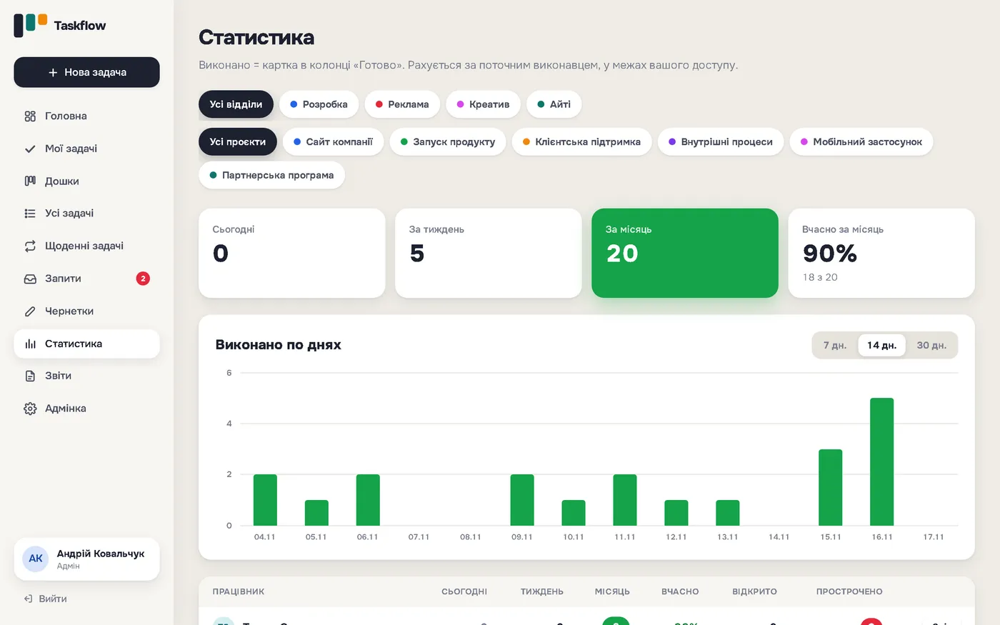
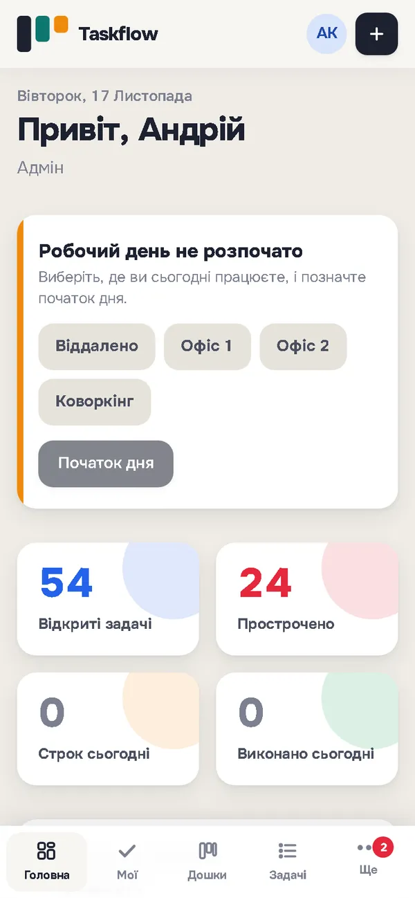
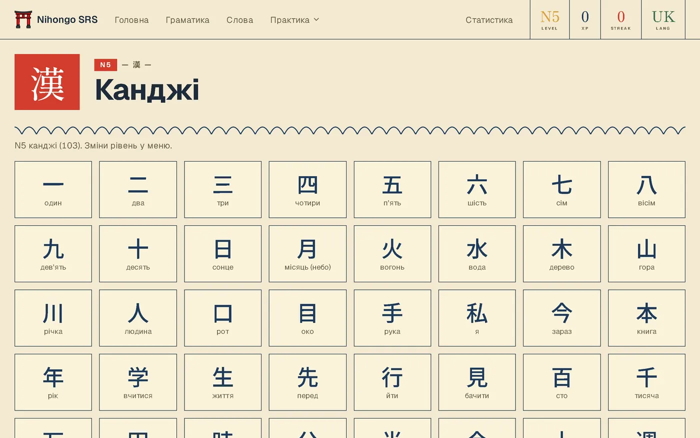
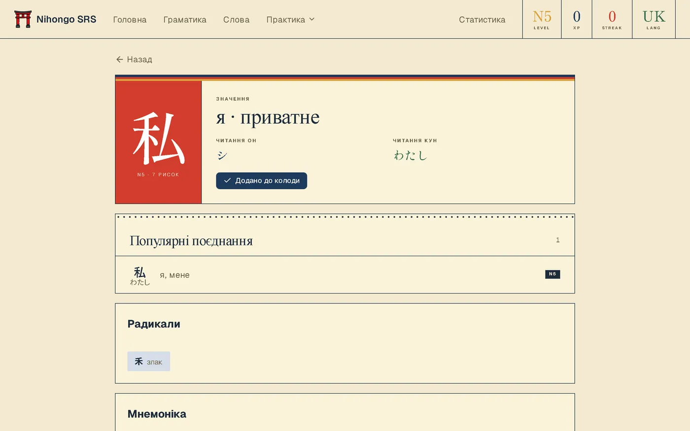
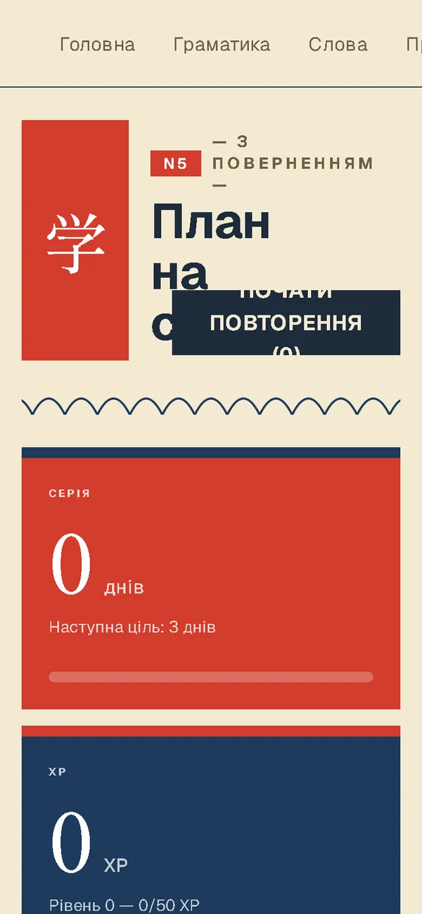
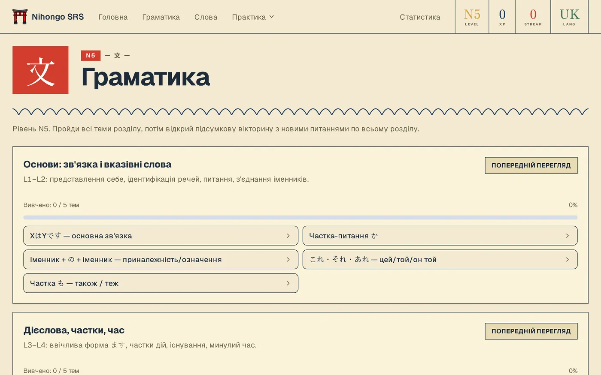
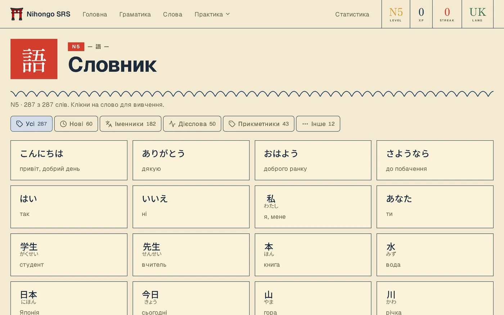
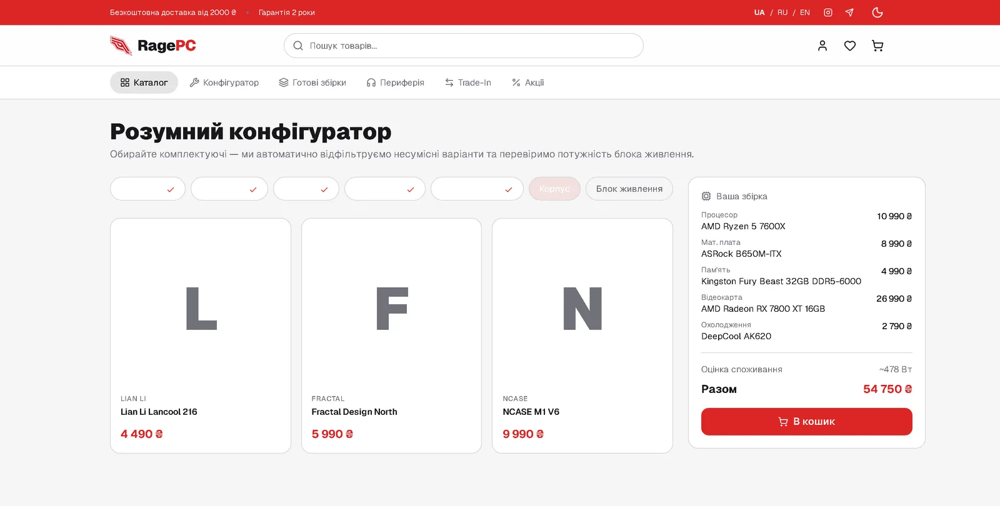
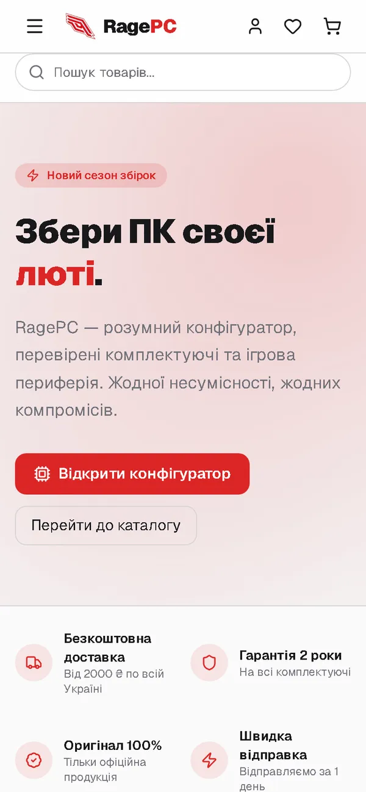

Full-stack на Next.js, TypeScript і Prisma. Нижче три останні проєкти: трекер задач для команди з Telegram-ботом, тренажер японської з інтервальними повтореннями та інтернет-магазин комплектуючих, де конфігуратор сам відсіює несумісні деталі.
Трекер задач для команди з кількох відділів. Дошки працюють як у Trello, а поверх них є те, чого Trello не вміє: рівні доступу, запити на погодження, щоденні задачі, звіти по людях у PDF і бот, що надсилає сповіщення в Telegram.
Виконавець, керівник групи, керівник відділу, адмін. Кожен бачить тільки свої картки.
Задача поза правами автора не губиться, а йде адміну на підтвердження.
Прогрес батьківської задачі рахується сам, щоденні створюються автоматично й ведуть історію по днях.
Працівник і період на вибір. Хто що виконав, скільки в строк, що прострочено, розбивка по проєктах.


Слова, кандзі й граматика проходять через один алгоритм інтервальних повторень SM-2, як в Anki. Курс граматики зібраний за уроками Genki, до кожної теми є теорія, приклади й вікторина. Над кандзі автоматично стоїть фуригана, а аудіювання озвучує Web Speech API. Інтерфейс англійською та українською.





Інтернет-магазин комплектуючих і готових збірок. Головне в ньому конфігуратор: він веде від процесора до блока живлення й на кожному кроці ховає деталі, які не підійдуть.


Next.js App Router, React 19, TypeScript, Tailwind CSS v4, dnd-kit для перетягування, Recharts для графіків, адаптивна верстка.
Server Actions, Prisma 7, PostgreSQL і SQLite, власні сесії з bcrypt, генерація PDF, Telegram Bot API.
Vitest, e2e-прогони на Playwright, ESLint, PM2 і Nginx на VPS, атомарна викладка скриптом.
Unreal Engine 5, Qt Widgets, SDL. Звідси звичка думати про пам'ять і продуктивність.